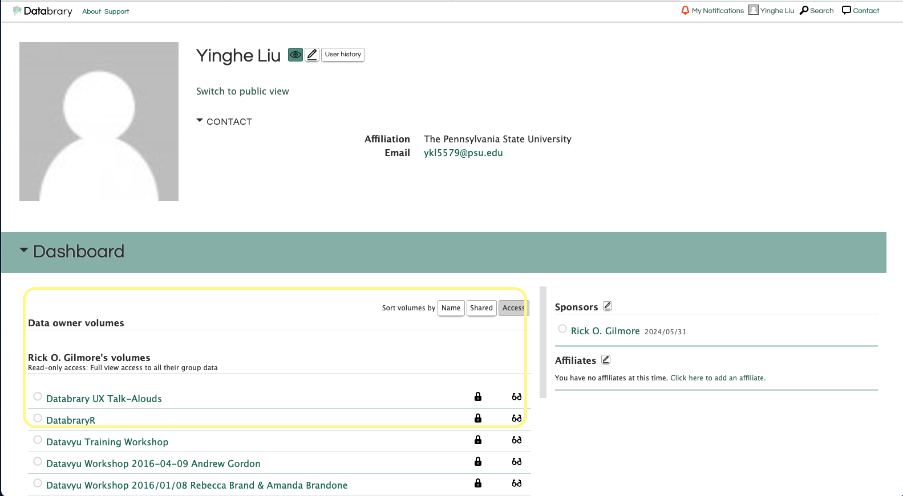
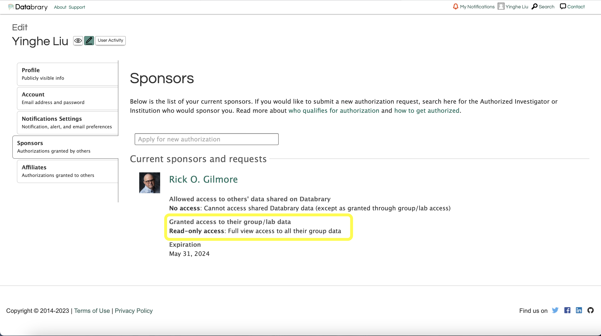
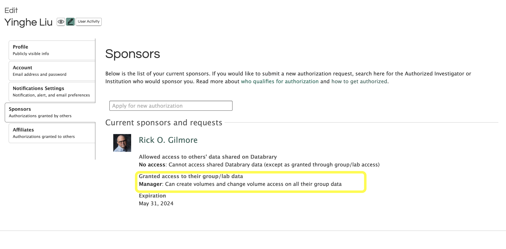
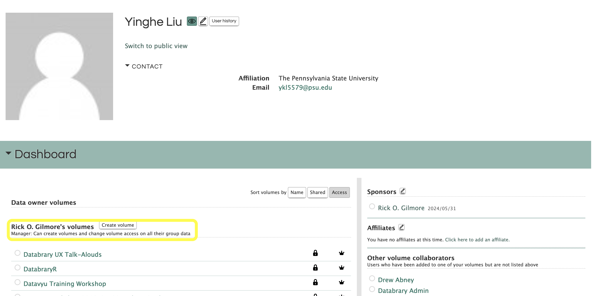
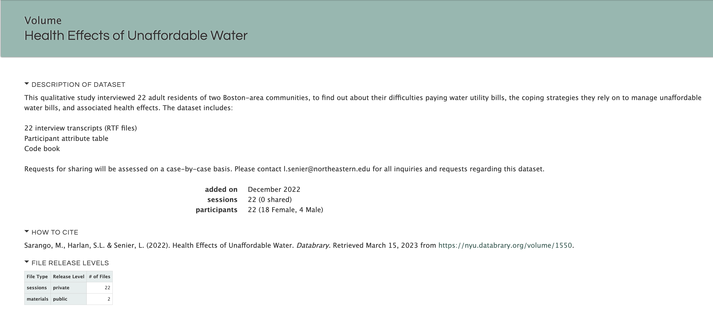
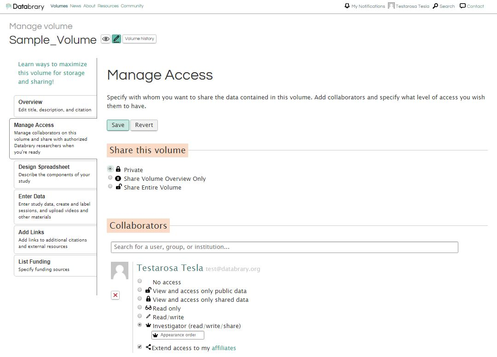
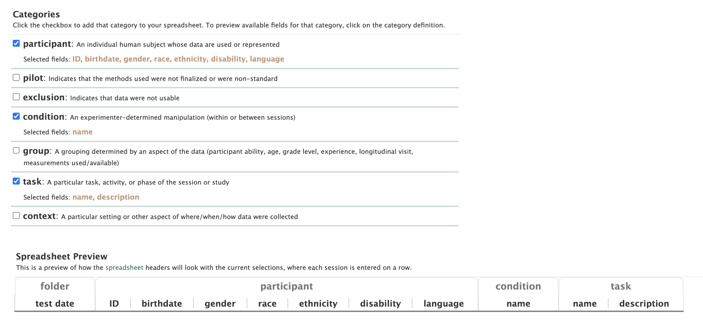
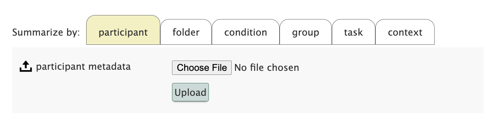
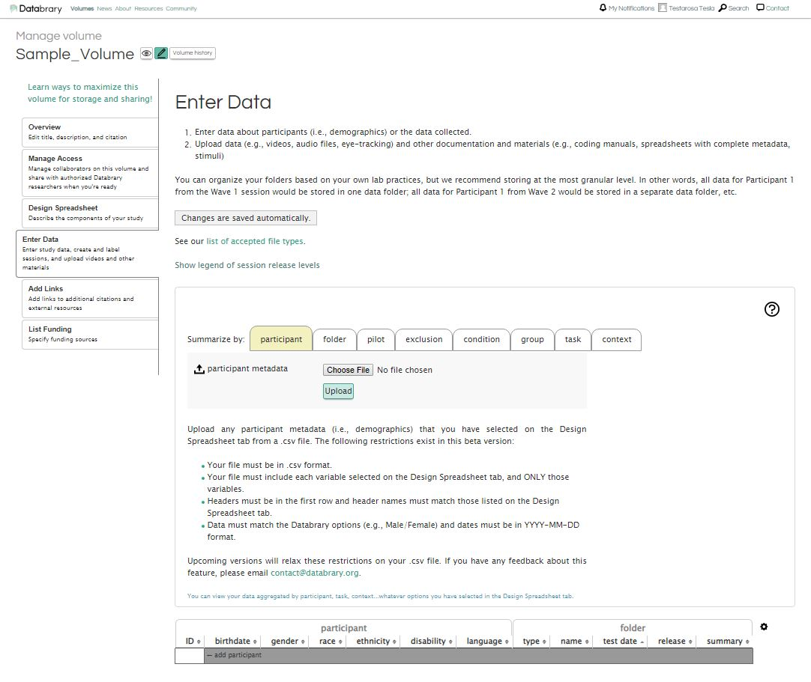

knitr::include_graphics("../include/img/db-create-volume.JPG")
Each project can create a volume for storing and sharing data. We encourage corresponding actions to be performed before the project is in collecting data process. In this case, you would utilize the upload as you go method of data curation.
We have intentionally limited the permissions to manage the volume to ensure data security. Creating volumes is a privilege granted to the project’s Manager status affiliates, and sharing the volume is not allowed for affiliates.
Volumes cannot be deleted once created.
If you have created a volume by mistake, you can hide the volume by restricting access to others or rename the volume so that it can be reused by another future project.
Let’s get started with creating a new volume.
Review Onborading-affiliates for how to find your profile.

If the button is not available, check your sponsor status by reviewing your profile. If you are not granted with Manager status, you will not be able to create a new volume.

Read-Only access will not allow you to create a new volume. Only affiliates granted with Manager status will be able to create a new volume. Meanwhile, affiliates at all circumstances may not share access to the volume with others even with the manager status.

If you have been granted with access to create a new volume, you will see the button Create a new volume under Your Sponsor Volumes.

Again, creating a new volume with careful consideration is important. Once created, the volume cannot be deleted.
Click the button Create a new volume to create a new volume.
Click on Create Volume to the right of Data Owner Volumes
knitr::include_graphics("../include/img/db-create-volume.JPG")
There are multiple tabs on the left side of the screen that need to be completed to set up a new volume. In this page, you will be asked to provide the following information: overview, manage access, design spreadsheet, enter data, add links, and list fundings. These tabs need to be completed in order.
Volume Overview is created by choosing if the volume is related to a published resource and answering the related questions (Title, Description, Internal Short Name and additional citation information if necessary).
Please describe the context of data collection and the types of data that will be uploaded (e.g. video, pictures, coding files, survey data, etc.). The recommended template is provided. Please be sure to fill in all of the brackets with the relevant information for your volume.
This dataset focuses on [Provide provide a description of behavor, location of study, and age range]. Dataset includes [Enter description of videos, questionnaires, materials, etc.]
Videos were [Provide provide a general description of what the videos were coded for. (Some examples may include: transcribed for mother speech and child vocalizations; coded for mother and child object interaction; child locomotion and emotion).] (see Materials folder).
This volume contains [Enter list the types of files along with approximate numbers for each. Some examples are provided below]:
knitr::include_graphics("../include/img/db-example-data-description.png")
If you need this data to be associated with a DOI, please answer YES to the question Does this volume correspond to a published paper or resource
When all items are entered, select Save
knitr::include_graphics("../include/img/db-new-volume-overview.png")
You may have the option to enter Keywords associated with the Volume. See below for description.
Next, go to Manage Access to choose volume sharing options and add collaborators (faculty, staff, students) that already have an account on Databrary that is Sponsored by an Institution or an Authorized Investigator.
Click Save when done.
Please be sure to pick the appropriate sharing setting, Private, Share Volume Overview Only or Share Entire Volume. The default sharing setting is Private.
Private: keeps the volume private to you and your chosen affiliates and collaborators
Share Volume Overview Only: This will only share the Title and description of the volume exactly as it is entered in the Overview Tab
Shared:
Please note: Only the Authorized Investigator who created this volume can ‘Share Entire Volume’
knitr::include_graphics("../include/img/db-new-volume-manage-access.JPG")
Now, go to Design Spreadsheet and choose all the categories and sub-categories you would like to include in your spreadsheet for participant/session metadata.
knitr::include_graphics("../include/img/db-new-volume-design-spreadsheet.png")
participant: An individual human subject whose data are used or represented
ID A unique, anonymized, primary identifier, such as a participant ID.
info Other information or alternative identifier
birthdate Date of birth (used with session date to calculate age)
description A longer explanation or description (‘description’ is NOT sortable through the Databrary volume filters)
gender “Male”, “Female”, or any other relevent gender
race As classified by NIH, or user-defined classification
ethnicity As classified by NIH (Hispanic/Non-Hispanic), or user-defined classification
gestational age Pregnancy age in weeks between last menstrual period and birth (or pre-natal observation)
pregnancy term “Full term”, “Preterm”, or other gestational term (assumed “Full term” by default)
birth weight Weight at birth (in grams, e.g., 3250)
disability Any developmental, physical, or mental disability or disabilities (assumed “Typical” by default)
language Primary language(s) spoken by and to participant (assumed “English” by default)
country Country where participant was born (assumed “US” by default)
state State/territory where particpiant was born
setting The physical context of the participant (please do not use for new data: see the context category instead)
pilot: Indicates that the methods used were not finalized or were non-standard
name A label or identifier referring to the pilot method (This is the only field in the “pilot” section that is sortable through the Databrary volume filters)
description A longer explanation or description of the pilot method
exclusion: Indicates that deta were not usable
name A label or identifier referring to the exclusion criterion (This is the only field in the “exclusion” section that is sortable through the Databrary volume filters)
reason The reason for excluding these data
description A longer explanation or description of the reason for excluding data
condition: An experimenter-determined manipulation (within or between sessions)
name A label or identifier referring to the exclusion criterion (This is the only field in the “label” section that is sortable through the Databrary volume filters)
reason The reason for excluding these data
description A longer explanation or description of the reason for excluding data
group: A grouping determined by an aspect of the data (participant ability, age, grade level, experience, longitudinal visit, measurements used/available)
name A label or identifier referring to the exclusion criterion (This is the only field in the “group” section that is sortable through the Databrary volume filters)
reason The reason for excluding these data
description A longer explanation or description of the reason for excluding data
task: A particular task, activity, or phase of the session or study
name A label or identifier referring to the exclusion criterion (This is the only field in the “task” section that is sortable through the Databrary volume filters)
reason The reason for excluding these data
description A longer explanation or description of the reason for excluding data
context: A particular setting or other aspect of where/when/how data were collected
name A label or identifier referring to the exclusion criterion
setting The physical context
language Language used in this context (assumed “English” by default)
country Country of data collection (assumed “US” by default)
state State/territory of data collection
Now it is time to Enter Data. There are two options:
See video instructions or follow the step by step instructions below.
knitr::include_url("https://nyu.databrary.org/slot/27587/0,183810/asset/122478/download?inline=true")What is an appropriately formatted .csv file?
Design Spreadsheet tab.knitr::include_graphics("../include/img/db-design-spreadsheet.png")
so this .csv file would look like:
knitr::include_graphics("../include/img/db-participant-metadata.png")
Now it is time to upload the participant .csv file.
Click the participant tab. Then Choose File to navigate to the appropriate file. Finally click Upload.
knitr::include_graphics("../include/img/db-enter-data-participant.png")
You will see a window that summarizes the data uploaded and will point out any potential errors (e.g. wrong header names, missing data)
knitr::include_graphics("../include/img/db-data-upload-summary.png")
Please review these data
Then click Yes.
Now the uploaded data will show like this.
knitr::include_graphics("../include/img/db-uploaded-metadata.png")
After the participant metadata is uploaded, the data regarding the testing session and any relevant filed get uploaded individually.
See video instructions or follow the step by step instructions below.
knitr::include_url("https://nyu.databrary.org/slot/27588/0,170067/asset/122480/download?inline=true")Click on the folder tab.
Click on add folder and choose to add a session or materials folder.
knitr::include_graphics("../include/img/db-add-folder.png")
Session folders are for participant sessions and materials folders are for thing related to the study such as surveys used, sample consent forms, and stimuli.
Session folders need to be added individually. Once the Participant ID is entered, the related metadata will be filled in. Then the rest of the session information will need to be added individually.
knitr::include_graphics("../include/img/db-new-volume-enter-data.JPG")
Please share more information in your Databrary Volume using Add Links. Here you will want to add links to any outside resources related to this dataset (e.g. published paper, github repository)
knitr::include_graphics("../include/img/db-new-volume-add-links.JPG")
Finally, please share your funding source for your volume in List Funding. If your funding source is not listed here, please email Databrary Staff at contact@databrary.org to have it added.
knitr::include_graphics("../include/img/db-new-volume-list-funding.JPG")